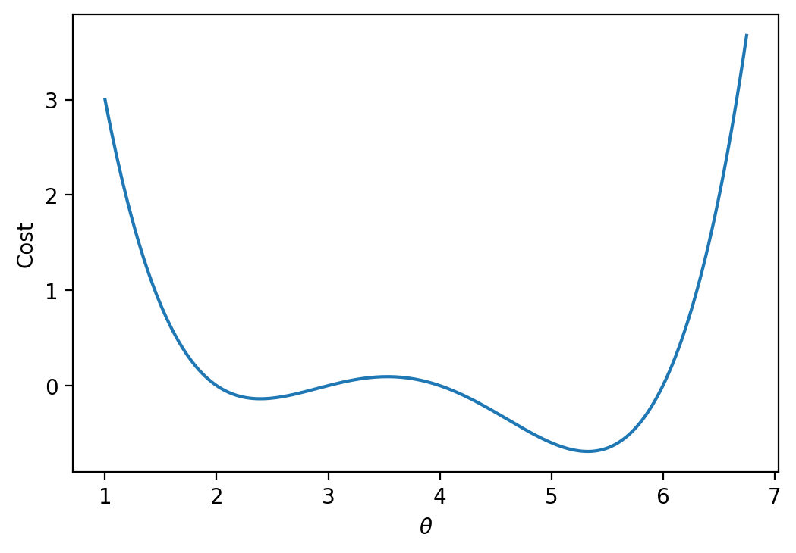
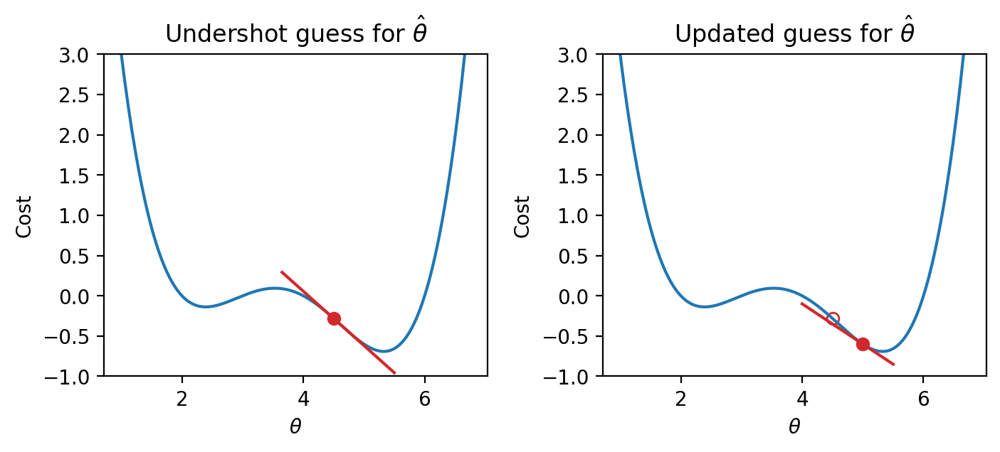
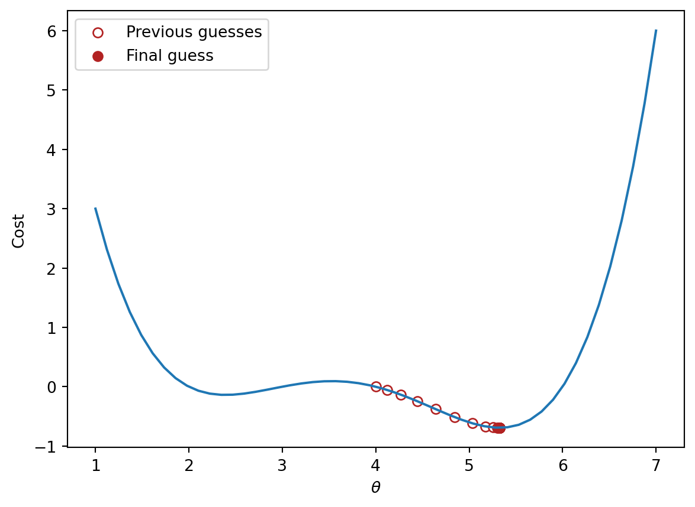
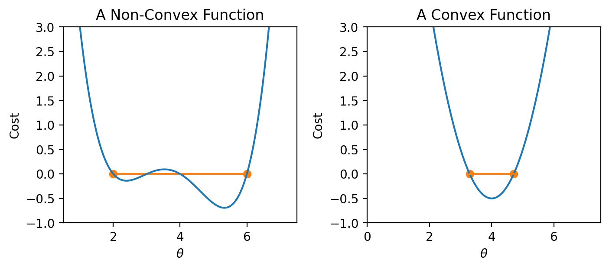
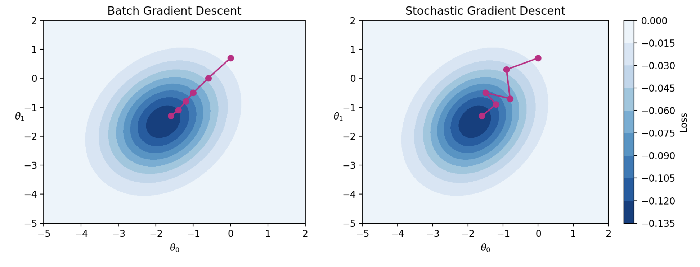

Describe the conceptual basis for gradient descent
Compute the gradient descent update on a provided dataset
At this point, we’re fairly comfortable with fitting a regression model under MSE risk (indeed, we’ve done it twice now!). We have seen how we can algebraically solve for the minimizing value of the model parameter \(\theta\), as well as how we can use linear algebra to determine the optimal parameters geometrically.
It’s important to remember, however, that the results we’ve found previously apply to one very specific case: the derivations we performed previously are only relevant to a linear regression model using MSE as the cost function. In reality, we’ll be working with a wide range of model types and objective functions, not all of which are as straightforward as the scenario we’ve discussed previously. This means that we need some more generalizable way of fitting a model to minimize loss.
To do this, we’ll introduce the technique of gradient descent.
12.1 Minimizing a 1D Function
Let’s shift our focus away from MSE to consider some new, arbitrary cost function. You can think of this function as outputting the empirical risk associated with some parameter theta.

Our goal is to find the input that minimzes this arbitrary function. In other words, we want to find the position along the x-axis where the function is at its minimum. In a modeling context, you can imagine attempting to find the value of \(\theta\) that results in the lowest possible loss for a model.
12.1.1 The Naive Approach: Guess and Check
Above, we saw that the minimum is somewhere around 5.3ish. Let’s see if we can figure out how to find the exact minimum algorithmically from scratch. One way very slow and terrible way would be to manually guess-and-check. The code below “guesses” several possible minimizing values and checks to see which one gives the lowest value of the function.
import numpy as npdef arbitrary(theta):# The function we would like to minimizereturn (theta**4-15*theta**3+80*theta**2-180*theta +144)/10def simple_minimize(f, thetas): y = [f(theta) for theta in thetas] return thetas[np.argmin(y)]guesses = [5.3, 5.31, 5.32, 5.33, 5.34, 5.35]simple_minimize(arbitrary, guesses)
5.33
This technique moves slowly: we have to manually specify what values we would like to guess. It is also imprecise – if the true minimizing value happened to lie between two of our guesses, we would have no way of identifying it. We want a more rigorous method of identifying the minimizing value.
12.1.2scipy.optimize.minimize
Another method to minimize this mathematical function is to use the optimize.minimize function from the scipy library. It takes a function and a starting guess, then, it locates the minimum of the function.
from scipy.optimize import minimize# In the readout below, `x` corresponds to the minimizing value of the functionminimize(arbitrary, x0 =3.5)
scipy.optimize.minimize is great. It may also seem a bit magical. How can this one line of code find the minimum of any mathematical function so quickly?
Behind the scenes, scipy.optimize.minimize uses a technique called gradient descent to compute the minimizing value of a function. In this lecture, we will learn the underlying theory behind gradient descent, then implement it ourselves.
12.1.3 Finding the Minimum Algorithmically
Looking at the function across this domain, it is clear that the function’s minimum value occurs around \(\theta = 5.3\). Let’s pretend for a moment that we couldn’t see the full view of the cost function. How would we guess the value of \(\theta\) that minimizes the function?
It turns out that the first derivative of the function can give us a clue. In the plots below, the line indicates the value of the function’s derivative at each value of \(\theta\). The derivative is negative where it is red and positive where it is green.
Say we make a guess for the minimizing value of \(\theta\). Remember that we read plots from left to right, and assume that our starting \(\theta\) value is to the left of the optimal \(\hat{\theta}\). If the guess “undershoots” the true minimizing value – our guess for \(\theta\) is not quite at the value of the \(\hat{\theta}\) that truly minimizes the function – the derivative will be negative in value. This means that if we increase \(\theta\) (move further to the right), then we can decrease our loss function further. If this guess “overshoots” the true minimizing value, the derivative will be positive in value, implying the converse.
We can use this pattern to help formulate our next guess for the optimal \(\hat{\theta}\). Consider the case where we’ve undershot \(\theta\) by guessing too low of a value. We’ll want our next guess to be greater in value than the previous guess – that is, we want to shift our guess to the right. You can think of this as following the slope “downhill” to the function’s minimum value.

If we’ve overshot \(\hat{\theta}\) by guessing too high of a value, we’ll want our next guess to be lower in value – we want to shift our guess for \(\hat{\theta}\) to the left. Again, we follow the slope of the curve downhill towards the minimum value.
12.2 Gradient Descent on a 1D Model
These observations lead us to the gradient descent update rule: \[\theta^{(t+1)} = \theta^{(t)} - \alpha \frac{d}{d\theta}L(\theta^{(t)})\]
Begin with our guess for \(\hat{\theta}\) at timestep \(t\). To find our guess for \(\hat{\theta}\) at the next timestep, \(t+1\), subtract the objective function’s derivative \(\frac{d}{d\theta} L(\theta^{(t)})\) scaled by a positive value \(\alpha\). We’ve replaced the generic function \(f\) with \(L\) to indicate that we are minimizing loss.
If our guess \(\theta^{(t)}\) is to the left of \(\hat{\theta}\) (undershooting), the first derivative will be negative. Subtracting a negative number from \(\theta^{(t)}\) will increase the value of the next guess, \(\theta^{(t+1)}\). The guess will shift to the right.
If our guess \(\theta^{(t)}\) was too high (overshooting \(\hat{\theta}\)), the first derivative will be positive. Subtracting a positive number from \(\theta^{(t)}\) will decrease the value of the next guess, \(\theta^{(t+1)}\). The guess will shift to the left.
Put together, this captures the same behavior we reasoned through above. We repeatedly update our guess for the optimal \(\theta\) until we’ve completed a set number of updates, or until each additional update iteration does not change the value of \(\theta\). In this second case, we say that gradient descent has converged on a solution. Our choice of which stopping condition to use will depending on the specific application.
The \(\alpha\) term in the update rule is known as the learning rate. It is a positive value represents the size of each gradient descent update step – in other words, how “far” should we step to the left or right with each updated guess? A high value of \(\alpha\) will lead to large differences in value between consecutive guesses for \(\hat{\theta}\); a low value of \(\alpha\) will result in smaller differences in value between consecutive guesses. This is our first example of a hyperparameter – a parameter hand-picked by the data scientist that changes the model’s behavior – in this course.
If we run gradient descent on our arbitrary function, we produce a more precise estimate of the minimizing \(\theta\).
Code
# Define the derivative of the arbitrary function we want to minimizedef derivative_arbitrary(theta):return (4*theta**3-45*theta**2+160*theta -180)/10def gradient_descent(df, initial_guess, alpha, n):"""Performs n steps of gradient descent on df using learning rate alpha starting from initial_guess. Returns a numpy array of all guesses over time.""" guesses = [initial_guess] current_guess = initial_guesswhilelen(guesses) < n: current_guess = current_guess - alpha * df(current_guess) guesses.append(current_guess)return np.array(guesses)trajectory = gradient_descent(derivative_arbitrary, 4, 0.3, 20)import matplotlib.pyplot as pltthetas = np.linspace(1, 7)plt.plot(thetas, arbitrary(thetas))plt.scatter(trajectory, arbitrary(trajectory), c="white", edgecolor="firebrick", label="Previous guesses")plt.scatter(trajectory[-1], arbitrary(trajectory[-1]), c="firebrick", label="Final guess")plt.xlabel(r"$\theta$")plt.ylabel(r"Cost")plt.legend();print(f"Minimizing theta: {trajectory[-1]}")
Minimizing theta: 5.326344077237774

12.2.1 Convexity
In our analysis above, we focused our attention on the global minimum of the loss function. You may be wondering: what about the local minimum just to the left?
If we had chosen a different starting guess for \(\theta\), or a different value for the learning rate \(\alpha\), we may have converged on the local minimum, rather than on the true optimum value of loss.
The arbitrary function we have been working with is non-convex: it contains both local and global minima.
Conversely, if a loss function is convex, gradient descent is guaranteed to find the global minimum of the objective function. Formally, a function \(f\) is convex if:
\[tf(a) + (1-t)f(b) \geq f(ta + (1-t)b)\]
To put this into words: if you drew a line between any two points on the curve, all values on the curve must be on or below the line. Importantly, any local minimum of a convex function is also its global minimum.

Why does this matter? Non-convex loss functions can cause problems with optimization. This means that our choice of loss function is an key factor in our modeling process. It turns out that MSE is convex, which is a major reason why it is such a popular choice of loss function.
12.3 Multi-Dimensional Gradient Descent
We’re in good shape now: we’ve developed a technique to find the minimum value of a more complex objective function.
The function we worked with above was one-dimensional – we were only minimizing the function with respect to a single parameter, \(\theta\). However, as we’ve seen before, we often need to optimize a cost function with respect to several parameters (for example, when selecting the best model parameters for multiple linear regression). We’ll need to extend our gradient descent rule to multi-dimensional objective functions.
Let’s consider our familiar tips dataset.
Code
import seaborn as snstips = sns.load_dataset("tips")tips.head()
total_bill
tip
sex
smoker
day
time
size
0
16.99
1.01
Female
No
Sun
Dinner
2
1
10.34
1.66
Male
No
Sun
Dinner
3
2
21.01
3.50
Male
No
Sun
Dinner
3
3
23.68
3.31
Male
No
Sun
Dinner
2
4
24.59
3.61
Female
No
Sun
Dinner
4
12.3.1 Loss Surfaces
Suppose we want to apply simple linear regression to predict the "tip" from the "total_bill" and an intercept term. Our model takes the form:
\[\hat{y} = \theta_0 + \theta_1 x\]
We’ll use the MSE loss function to quantify our model’s error.
Notice that our model contains two parameters, \(\theta_0\) and \(\theta_1\). This means that we now need to optimize two different parameters to determine their optimal values. Rather than a one-dimensional loss function like we saw in the previous section, we are now dealing with a loss surface.
A loss surface visualizes how the model’s loss changes with different combinations of parameter values. Each point on the surface tells us what the model’s loss will be for a given choice of \(\theta_0\) and \(\theta_1\). Click and drag on the visualization below to explore the surface. We have marked the optimal choice of model parameters in red.
Code
# This code is for illustration purposes only# It contains a lot of syntax you have not seen before# For now, just focus on the outputted plotimport plotly.graph_objects as goimport sklearn.linear_model as lmmodel = lm.LinearRegression(fit_intercept =False)tips["bias"] =1model.fit(tips[["bias","total_bill"]], tips["tip"])uvalues = np.linspace(-1, 3, 10)vvalues = np.linspace(-0.2, 0.5, 10)(u,v) = np.meshgrid(uvalues, vvalues)thetas = np.vstack((u.flatten(),v.flatten()))X = tips[["bias","total_bill"]].to_numpy()Y = tips["tip"].to_numpy()def mse_loss_single_arg(theta):return mse_loss(theta, X, Y)def mse_loss(theta, X, y_obs): y_hat = X @ thetareturn np.mean((y_hat - Y) **2) MSE = np.array([mse_loss_single_arg(t) for t in thetas.T])loss_surface = go.Surface(x=u, y=v, z=np.reshape(MSE, u.shape))ind = np.argmin(MSE)optimal_point = go.Scatter3d(name ="Optimal Point", x = [thetas.T[ind,0]], y = [thetas.T[ind,1]], z = [MSE[ind]], marker=dict(size=10, color="red"))fig = go.Figure(data=[loss_surface, optimal_point])fig.update_layout(scene =dict( xaxis_title ="theta0", yaxis_title ="theta1", zaxis_title ="MSE"))fig.show()
It is often easier to visualize a loss surface by using a contour plot. You can imagine the visualization below as being a “bird’s eye view” of the 2D loss surface from above.
Though our objective function looks a little different, we can use the same principles as we did earlier to locate the optimal model parameters. Notice how the minimum value of MSE, marked by the red dot in the plot above, occurs in the “valley” of the loss surface. Like before, we want our guesses for the best pair of \((\theta_0,\:\theta_1)\) to move “downhill” towards this minimum point.
With a small adjustment, we can use the same gradient descent algorithm we derived earlier. Our loss function is now a multivariable function. It depends on two variables, \(\theta_0\) and \(\theta_1\). We’ll need to take the derivative with respect to one of these variables at a time.
A partial derivative is the derivative of a multivariable function with respect to just one variable. We treat all other variables in the function as constants, and instead focus our attention on just the variable of interest. For a multivariable function \(f(x, y)\), the symbol \(\frac{\partial f} {\partial x}\) denotes the partial derivative of \(f\) with respect to \(x\) (holding \(y\) constant), while the symbol \(\frac{\partial f} {\partial y}\) denotes the partial derivative of \(f\) with respect to \(y\) (holding \(x\) constant).
When optimizing a model with just one parameter, we iteratively updated guesses for only one \(\theta\).
In our new model with two parameters, we need to update guesses for both\(\theta_0\) and \(\theta_1\) that minimize our loss function \(L(\theta_0, \theta_1)\). This means that we apply our gradient update rule for each parameter \(\theta_i\). Because the loss function \(L(\theta_0, \theta_1)\) is now a function of two variables, we compute its partial derivatives with respect to \(\theta_0\) and \(\theta_1\).
We can tidy this statement up by using vector notation: \[\begin{bmatrix}
\theta_{0}^{(t+1)} \\
\theta_{1}^{(t+1)} \\
\end{bmatrix}
=
\begin{bmatrix}
\theta_{0}^{(t)} \\
\theta_{1}^{(t)} \\
\end{bmatrix}
- \alpha
\begin{bmatrix}
\frac{\partial L}{\partial \theta_{0}}\vert_{\theta=\theta^{(t)}} \\
\frac{\partial L}{\partial \theta_{1}}\vert_{\theta=\theta^{(t)}} \\
\end{bmatrix}
\]
To save ourselves from writing out long column vectors, we’ll introduce some new notation. \(\vec{\theta}^{(t)}\) is a column vector of guesses for each model parameter \(\theta_i\) at timestep \(t\). We call \(\nabla_{\vec{\theta}} L\) the gradient vector. In plain English, it means “take the derivative of loss, \(L\), with respect to each model parameter in \(\vec{\theta}\), and evaluate it at the given \(\theta = \theta^{(t)}\).”
Let’s see this in action. In the cell below, we compute the gradient vector for our choice of model and loss function, then run the gradient descent algorithm. We see that our final guess lies very close to the true minimum of the loss surface!
Code
def mse_gradient(theta, X, y_obs):"""Returns the gradient of the MSE on our data for the given theta""" x0 = X.iloc[:, 0] x1 = X.iloc[:, 1] dth0 = np.mean(-2* (y_obs - theta[0]*x0 - theta[1]*x1) * x0) dth1 = np.mean(-2* (y_obs - theta[0]*x0 - theta[1]*x1) * x1)return np.array([dth0, dth1])def mse_gradient_single_arg(theta):"""Returns the gradient of the MSE on our data for the given theta""" X = tips[["bias", "total_bill"]] y_obs = tips["tip"]return mse_gradient(theta, X, y_obs)def mse_single_arg(theta): theta_0, theta_1 = theta[0], theta[1]return np.mean((tips["tip"]-theta_0-theta_1*tips["total_bill"])**2)guesses = gradient_descent(mse_gradient_single_arg, np.array([0.5, 0.3]), 0.002, 1000)mses = [mse_single_arg(theta) for theta in guesses]trajectory = go.Scatter3d(x=guesses[:, 0], y=guesses[:, 1], z=mses, marker=dict(size=3))fig = go.Figure(data=[loss_surface, trajectory])fig.update_layout(scene =dict( xaxis_title ="theta0", yaxis_title ="theta1", zaxis_title ="MSE"))fig.show()
12.4 Batch, Mini-Batch, and Stochastic Gradient Descent
Formally, the algorithm we derived above is called batch gradient descent. For each iteration of the algorithm, the derivative of loss is computed across the entire batch of available data. In other words, we compute the derivative of the loss function across all \(n\) datapoints in our dataset. While this update rule works well in theory, it is not practical in all circumstances. For large datasets (with perhaps billions of data points), finding the gradient across all the data is incredibly computationally taxing.
Mini-batch gradient descent tries to address this issue. In mini-batch descent, only a subset of the data is used to compute an estimate of the gradient. The batch size is the number of datapoints that are used to approximate the gradient at each update iteration. For example, we might consider only 10% of the total data at each gradient descent update step. At the next iteration, a different 10% of the data is sampled to perform the following update. Once the entire dataset has been used, the process is repeated. Each complete “pass” through the data is known as a training epoch. We perform several training epochs until we are satisfied with the optimization result.
In the extreme case, we might choose a batch size of only 1 datapoint – that is, a single data point is used to estimate the gradient of loss with each update step. This is known as stochastic gradient descent.
Batch gradient descent is a deterministic technique – because the entire dataset is used at each update iteration, the algorithm will always advance towards the minimum of the loss surface. In contrast, both mini-batch and stochastic gradient descent involve an element of randomness. Since only a subset of the full data is used to update the guess for \(\vec{\theta}\) at each iteration, there’s a chance the algorithm will not progress towards the true minimum of loss with each update. Instead, the algorithm approximates the true gradient using only a smaller subset of the data. Over the longer term, these stochastic techniques typically converge towards the true optimal solution.
The diagrams below represent a “bird’s eye view” of a loss surface from above. Notice that batch gradient descent takes a direct path towards the optimal \(\hat{\theta}\). Stochastic gradient descent, in contrast, “hops around” on its path to the minimum point on the loss surface. This reflects the randomness of the sampling process at each update step.

Source Code
---title: Gradient Descentexecute: echo: true warning: falseformat: html: code-fold: false code-tools: true toc: true toc-title: Gradient Descent page-layout: full theme: - cosmo - cerulean callout-icon: falsejupyter: python3---::: {.callout-note collapse="true"}## Learning Outcomes* Describe the conceptual basis for gradient descent* Compute the gradient descent update on a provided dataset:::At this point, we're fairly comfortable with fitting a regression model under MSE risk (indeed, we've done it twice now!). We have seen how we can algebraically solve for the minimizing value of the model parameter $\theta$, as well as how we can use linear algebra to determine the optimal parameters geometrically.It's important to remember, however, that the results we've found previously apply to one very specific case: the derivations we performed previously are only relevant to a linear regression model using MSE as the cost function. In reality, we'll be working with a wide range of model types and objective functions, not all of which are as straightforward as the scenario we've discussed previously. This means that we need some more generalizable way of fitting a model to minimize loss. To do this, we'll introduce the technique of **gradient descent**.## Minimizing a 1D FunctionLet's shift our focus away from MSE to consider some new, arbitrary cost function. You can think of this function as outputting the empirical risk associated with some parameter `theta`. <imgsrc="images/arbitrary.png"alt='arbitrary'width='600'>Our goal is to find the input that *minimzes* this arbitrary function. In other words, we want to find the position along the x-axis where the function is at its minimum. In a modeling context, you can imagine attempting to find the value of $\theta$ that results in the lowest possible loss for a model.### The Naive Approach: Guess and CheckAbove, we saw that the minimum is somewhere around 5.3ish. Let's see if we can figure out how to find the exact minimum algorithmically from scratch. One way very slow and terrible way would be to manually guess-and-check. The code below "guesses" several possible minimizing values and checks to see which one gives the lowest value of the function.```{python}import numpy as npdef arbitrary(theta):# The function we would like to minimizereturn (theta**4-15*theta**3+80*theta**2-180*theta +144)/10def simple_minimize(f, thetas): y = [f(theta) for theta in thetas] return thetas[np.argmin(y)]guesses = [5.3, 5.31, 5.32, 5.33, 5.34, 5.35]simple_minimize(arbitrary, guesses)```This technique moves slowly: we have to manually specify what values we would like to guess. It is also imprecise – if the true minimizing value happened to lie *between* two of our guesses, we would have no way of identifying it. We want a more rigorous method of identifying the minimizing value.### `scipy.optimize.minimize`Another method to minimize this mathematical function is to use the `optimize.minimize` function from the `scipy` library. It takes a function and a starting guess, then, it locates the minimum of the function.```{python}from scipy.optimize import minimize# In the readout below, `x` corresponds to the minimizing value of the functionminimize(arbitrary, x0 =3.5)````scipy.optimize.minimize` is great. It may also seem a bit magical. How can this one line of code find the minimum of any mathematical function so quickly? Behind the scenes, `scipy.optimize.minimize` uses a technique called **gradient descent** to compute the minimizing value of a function. In this lecture, we will learn the underlying theory behind gradient descent, then implement it ourselves.### Finding the Minimum AlgorithmicallyLooking at the function across this domain, it is clear that the function's minimum value occurs around $\theta = 5.3$. Let's pretend for a moment that we *couldn't* see the full view of the cost function. How would we guess the value of $\theta$ that minimizes the function? It turns out that the first derivative of the function can give us a clue. In the plots below, the line indicates the value of the function's derivative at each value of $\theta$. The derivative is negative where it is red and positive where it is green.Say we make a guess for the minimizing value of $\theta$. Remember that we read plots from left to right, and assume that our starting $\theta$ value is to the left of the optimal $\hat{\theta}$. If the guess "undershoots" the true minimizing value – our guess for $\theta$ is not quite at the value of the $\hat{\theta}$ that truly minimizes the function – the derivative will be **negative** in value. This means that if we increase $\theta$ (move further to the right), then we **can decrease** our loss function further. If this guess "overshoots" the true minimizing value, the derivative will be positive in value, implying the converse.<imgsrc="images/step.png"alt='step'width='600'>We can use this pattern to help formulate our next guess for the optimal $\hat{\theta}$. Consider the case where we've undershot $\theta$ by guessing too low of a value. We'll want our next guess to be greater in value than the previous guess – that is, we want to shift our guess to the right. You can think of this as following the slope "downhill" to the function's minimum value.<imgsrc="images/neg_step.png"alt='neg_step'width='600'>If we've overshot $\hat{\theta}$ by guessing too high of a value, we'll want our next guess to be lower in value – we want to shift our guess for $\hat{\theta}$ to the left. Again, we follow the slope of the curve downhill towards the minimum value.<imgsrc="images/pos_step.png"alt='pos_step'width='600'>## Gradient Descent on a 1D ModelThese observations lead us to the **gradient descent update rule**:$$\theta^{(t+1)} = \theta^{(t)} - \alpha \frac{d}{d\theta}L(\theta^{(t)})$$Begin with our guess for $\hat{\theta}$ at timestep $t$. To find our guess for $\hat{\theta}$ at the next timestep, $t+1$, subtract the objective function's derivative $\frac{d}{d\theta} L(\theta^{(t)})$ scaled by a positive value $\alpha$. We've replaced the generic function $f$ with $L$ to indicate that we are minimizing loss.* If our guess $\theta^{(t)}$ is to the left of $\hat{\theta}$ (undershooting), the first derivative will be negative. Subtracting a negative number from $\theta^{(t)}$ will *increase* the value of the next guess, $\theta^{(t+1)}$. The guess will shift to the right.* If our guess $\theta^{(t)}$ was too high (overshooting $\hat{\theta}$), the first derivative will be positive. Subtracting a positive number from $\theta^{(t)}$ will *decrease* the value of the next guess, $\theta^{(t+1)}$. The guess will shift to the left.Put together, this captures the same behavior we reasoned through above. We repeatedly update our guess for the optimal $\theta$ until we've completed a set number of updates, or until each additional update iteration does not change the value of $\theta$. In this second case, we say that gradient descent has **converged** on a solution. Our choice of which stopping condition to use will depending on the specific application.The $\alpha$ term in the update rule is known as the **learning rate**. It is a positive value represents the size of each gradient descent update step – in other words, how "far" should we step to the left or right with each updated guess? A high value of $\alpha$ will lead to large differences in value between consecutive guesses for $\hat{\theta}$; a low value of $\alpha$ will result in smaller differences in value between consecutive guesses. This is our first example of a **hyperparameter** – a parameter hand-picked by the data scientist that changes the model's behavior – in this course.If we run gradient descent on our arbitrary function, we produce a more precise estimate of the minimizing $\theta$.```{python}#| code-fold: true# Define the derivative of the arbitrary function we want to minimizedef derivative_arbitrary(theta):return (4*theta**3-45*theta**2+160*theta -180)/10def gradient_descent(df, initial_guess, alpha, n):"""Performs n steps of gradient descent on df using learning rate alpha starting from initial_guess. Returns a numpy array of all guesses over time.""" guesses = [initial_guess] current_guess = initial_guesswhilelen(guesses) < n: current_guess = current_guess - alpha * df(current_guess) guesses.append(current_guess)return np.array(guesses)trajectory = gradient_descent(derivative_arbitrary, 4, 0.3, 20)import matplotlib.pyplot as pltthetas = np.linspace(1, 7)plt.plot(thetas, arbitrary(thetas))plt.scatter(trajectory, arbitrary(trajectory), c="white", edgecolor="firebrick", label="Previous guesses")plt.scatter(trajectory[-1], arbitrary(trajectory[-1]), c="firebrick", label="Final guess")plt.xlabel(r"$\theta$")plt.ylabel(r"Cost")plt.legend();print(f"Minimizing theta: {trajectory[-1]}")```### ConvexityIn our analysis above, we focused our attention on the global minimum of the loss function. You may be wondering: what about the local minimum just to the left? If we had chosen a different starting guess for $\theta$, or a different value for the learning rate $\alpha$, we may have converged on the local minimum, rather than on the true optimum value of loss. ```{python}#| code-fold: truelocal_min_trajectory = gradient_descent(derivative_arbitrary, 1.6, 0.75, 20)plt.plot(thetas, arbitrary(thetas))plt.scatter(local_min_trajectory, arbitrary(local_min_trajectory), c="white", edgecolor="firebrick", label="Previous guesses")plt.scatter(local_min_trajectory[-1], arbitrary(local_min_trajectory[-1]), c="firebrick", label="Final guess")plt.xlabel(r"$\theta$")plt.ylabel(r"Cost")plt.legend();print(f"Minimizing theta: {local_min_trajectory[-1]}")```The arbitrary function we have been working with is non-convex: it contains both local and global minima.Conversely, if a loss function is **convex**, gradient descent is guaranteed to find the global minimum of the objective function. Formally, a function $f$ is convex if:$$tf(a) + (1-t)f(b) \geq f(ta + (1-t)b)$$To put this into words: if you drew a line between any two points on the curve, all values on the curve must be *on or below* the line. Importantly, any local minimum of a convex function is also its global minimum. <imgsrc="images/convex.png"alt='convex'width='600'>Why does this matter? Non-convex loss functions can cause problems with optimization. This means that our choice of loss function is an key factor in our modeling process. It turns out that MSE *is* convex, which is a major reason why it is such a popular choice of loss function.## Multi-Dimensional Gradient DescentWe're in good shape now: we've developed a technique to find the minimum value of a more complex objective function. The function we worked with above was one-dimensional – we were only minimizing the function with respect to a single parameter, $\theta$. However, as we've seen before, we often need to optimize a cost function with respect to several parameters (for example, when selecting the best model parameters for multiple linear regression). We'll need to extend our gradient descent rule to *multi-dimensional* objective functions.Let's consider our familiar `tips` dataset. ```{python}#| code-fold: trueimport seaborn as snstips = sns.load_dataset("tips")tips.head()```### Loss Surfaces Suppose we want to apply simple linear regression to predict the `"tip"` from the `"total_bill"` and an intercept term. Our model takes the form:$$\hat{y} = \theta_0 + \theta_1 x$$We'll use the MSE loss function to quantify our model's error.$$\text{MSE}(\theta_0,\:\theta_1) = \frac{1}{n} \sum_{i=1}^{n} (y_i - \hat{y}_i)^2 = \frac{1}{n} \sum_{i=1}^{n} (y_i - \theta_0 - \theta_1 x)^2$$Notice that our model contains two parameters, $\theta_0$ and $\theta_1$. This means that we now need to optimize *two* different parameters to determine their optimal values. Rather than a one-dimensional loss function like we saw in the previous section, we are now dealing with a **loss surface**. A loss surface visualizes how the model's loss changes with different *combinations* of parameter values. Each point on the surface tells us what the model's loss will be for a given choice of $\theta_0$ and $\theta_1$. Click and drag on the visualization below to explore the surface. We have marked the optimal choice of model parameters in red.```{python}#| code-fold: true# This code is for illustration purposes only# It contains a lot of syntax you have not seen before# For now, just focus on the outputted plotimport plotly.graph_objects as goimport sklearn.linear_model as lmmodel = lm.LinearRegression(fit_intercept =False)tips["bias"] =1model.fit(tips[["bias","total_bill"]], tips["tip"])uvalues = np.linspace(-1, 3, 10)vvalues = np.linspace(-0.2, 0.5, 10)(u,v) = np.meshgrid(uvalues, vvalues)thetas = np.vstack((u.flatten(),v.flatten()))X = tips[["bias","total_bill"]].to_numpy()Y = tips["tip"].to_numpy()def mse_loss_single_arg(theta):return mse_loss(theta, X, Y)def mse_loss(theta, X, y_obs): y_hat = X @ thetareturn np.mean((y_hat - Y) **2) MSE = np.array([mse_loss_single_arg(t) for t in thetas.T])loss_surface = go.Surface(x=u, y=v, z=np.reshape(MSE, u.shape))ind = np.argmin(MSE)optimal_point = go.Scatter3d(name ="Optimal Point", x = [thetas.T[ind,0]], y = [thetas.T[ind,1]], z = [MSE[ind]], marker=dict(size=10, color="red"))fig = go.Figure(data=[loss_surface, optimal_point])fig.update_layout(scene =dict( xaxis_title ="theta0", yaxis_title ="theta1", zaxis_title ="MSE"))fig.show()```It is often easier to visualize a loss surface by using a contour plot. You can imagine the visualization below as being a "bird's eye view" of the 2D loss surface from above.```{python}#| code-fold: trueloss_contour = go.Contour(x=u[0], y=v[:, 0], z=np.reshape(MSE, u.shape))fig = go.Figure(data=[loss_contour])fig.update_layout(scene =dict( xaxis_title ="theta0", yaxis_title ="theta1", zaxis_title ="MSE"))fig.show()```### Partial DerivativesThough our objective function looks a little different, we can use the same principles as we did earlier to locate the optimal model parameters. Notice how the minimum value of MSE, marked by the red dot in the plot above, occurs in the "valley" of the loss surface. Like before, we want our guesses for the best pair of $(\theta_0,\:\theta_1)$ to move "downhill" towards this minimum point. With a small adjustment, we can use the same gradient descent algorithm we derived earlier. Our loss function is now a **multivariable function**. It depends on two variables, $\theta_0$ and $\theta_1$. We'll need to take the derivative with respect to one of these variables at a time. A **partial derivative** is the derivative of a multivariable function with respect to just *one* variable. We treat all other variables in the function as constants, and instead focus our attention on just the variable of interest. For a multivariable function $f(x, y)$, the symbol $\frac{\partial f} {\partial x}$ denotes the partial derivative of $f$ with respect to $x$ (holding $y$ constant), while the symbol $\frac{\partial f} {\partial y}$ denotes the partial derivative of $f$ with respect to $y$ (holding $x$ constant).$$f(x, y) = 3x^2 + y$$$$\frac{\partial f} {\partial x} = 6x\:\:\:\:\:\:\:\:\:\:\:\:\:\:\:\:\frac{\partial f} {\partial y} = 1$$ We can interpret a partial derivative as saying "if change one variable while holding all other variables constant, how will the function change?"### Gradient Descent in Vector FormRecall our gradient descent update rule from before:$$\theta^{(t+1)} = \theta^{(t)} - \alpha \frac{d}{d\theta}L(\theta^{(t)})$$When optimizing a model with just one parameter, we iteratively updated guesses for only one $\theta$.In our new model with two parameters, we need to update guesses for *both* $\theta_0$ and $\theta_1$ that minimize our loss function $L(\theta_0, \theta_1)$. This means that we apply our gradient update rule for *each* parameter $\theta_i$. Because the loss function $L(\theta_0, \theta_1)$ is now a function of two variables, we compute its partial derivatives with respect to $\theta_0$ and $\theta_1$.$$\theta_0^{(t+1)} = \theta_0^{(t)} - \alpha \frac{\partial L}{\partial \theta_0}\Bigm\vert_{\theta=\theta^{(t)}} \qquad \qquad \theta_1^{(t+1)} = \theta_1^{(t)} - \alpha \frac{\partial L}{\partial \theta_1}\Bigm\vert_{\theta=\theta^{(t)}}$$We can tidy this statement up by using vector notation:$$\begin{bmatrix} \theta_{0}^{(t+1)} \\ \theta_{1}^{(t+1)} \\ \end{bmatrix}=\begin{bmatrix} \theta_{0}^{(t)} \\ \theta_{1}^{(t)} \\ \end{bmatrix}- \alpha\begin{bmatrix} \frac{\partial L}{\partial \theta_{0}}\vert_{\theta=\theta^{(t)}} \\ \frac{\partial L}{\partial \theta_{1}}\vert_{\theta=\theta^{(t)}} \\ \end{bmatrix}$$To save ourselves from writing out long column vectors, we'll introduce some new notation. $\vec{\theta}^{(t)}$ is a column vector of guesses for each model parameter $\theta_i$ at timestep $t$. We call $\nabla_{\vec{\theta}} L$ the **gradient vector.** In plain English, it means "take the derivative of loss, $L$, with respect to each model parameter in $\vec{\theta}$, and evaluate it at the given $\theta = \theta^{(t)}$."$$\vec{\theta}^{(t+1)}= \vec{\theta}^{(t)} - \alpha \nabla_{\vec{\theta}} L(\theta^{(t)})$$Let's see this in action. In the cell below, we compute the gradient vector for our choice of model and loss function, then run the gradient descent algorithm. We see that our final guess lies very close to the true minimum of the loss surface!```{python}#| code-fold: truedef mse_gradient(theta, X, y_obs):"""Returns the gradient of the MSE on our data for the given theta""" x0 = X.iloc[:, 0] x1 = X.iloc[:, 1] dth0 = np.mean(-2* (y_obs - theta[0]*x0 - theta[1]*x1) * x0) dth1 = np.mean(-2* (y_obs - theta[0]*x0 - theta[1]*x1) * x1)return np.array([dth0, dth1])def mse_gradient_single_arg(theta):"""Returns the gradient of the MSE on our data for the given theta""" X = tips[["bias", "total_bill"]] y_obs = tips["tip"]return mse_gradient(theta, X, y_obs)def mse_single_arg(theta): theta_0, theta_1 = theta[0], theta[1]return np.mean((tips["tip"]-theta_0-theta_1*tips["total_bill"])**2)guesses = gradient_descent(mse_gradient_single_arg, np.array([0.5, 0.3]), 0.002, 1000)mses = [mse_single_arg(theta) for theta in guesses]trajectory = go.Scatter3d(x=guesses[:, 0], y=guesses[:, 1], z=mses, marker=dict(size=3))fig = go.Figure(data=[loss_surface, trajectory])fig.update_layout(scene =dict( xaxis_title ="theta0", yaxis_title ="theta1", zaxis_title ="MSE"))fig.show()```## Batch, Mini-Batch, and Stochastic Gradient DescentFormally, the algorithm we derived above is called **batch gradient descent.** For each iteration of the algorithm, the derivative of loss is computed across the entire batch of available data. In other words, we compute the derivative of the loss function across all $n$ datapoints in our dataset. While this update rule works well in theory, it is not practical in all circumstances. For large datasets (with perhaps billions of data points), finding the gradient across all the data is incredibly computationally taxing. **Mini-batch gradient descent** tries to address this issue. In mini-batch descent, only a subset of the data is used to compute an estimate of the gradient. The **batch size** is the number of datapoints that are used to approximate the gradient at each update iteration. For example, we might consider only 10% of the total data at each gradient descent update step. At the next iteration, a different 10% of the data is sampled to perform the following update. Once the entire dataset has been used, the process is repeated. Each complete "pass" through the data is known as a **training epoch**. We perform several training epochs until we are satisfied with the optimization result. In the extreme case, we might choose a batch size of only 1 datapoint – that is, a single data point is used to estimate the gradient of loss with each update step. This is known as **stochastic gradient descent**.Batch gradient descent is a deterministic technique – because the entire dataset is used at each update iteration, the algorithm will always advance towards the minimum of the loss surface. In contrast, both mini-batch and stochastic gradient descent involve an element of randomness. Since only a subset of the full data is used to update the guess for $\vec{\theta}$ at each iteration, there's a chance the algorithm will not progress towards the true minimum of loss with each update. Instead, the algorithm *approximates* the true gradient using only a smaller subset of the data. Over the longer term, these stochastic techniques typically converge towards the true optimal solution. The diagrams below represent a "bird's eye view" of a loss surface from above. Notice that batch gradient descent takes a direct path towards the optimal $\hat{\theta}$. Stochastic gradient descent, in contrast, "hops around" on its path to the minimum point on the loss surface. This reflects the randomness of the sampling process at each update step.<imgsrc="images/bgd.png"alt='batch gradient descent'width='800'>